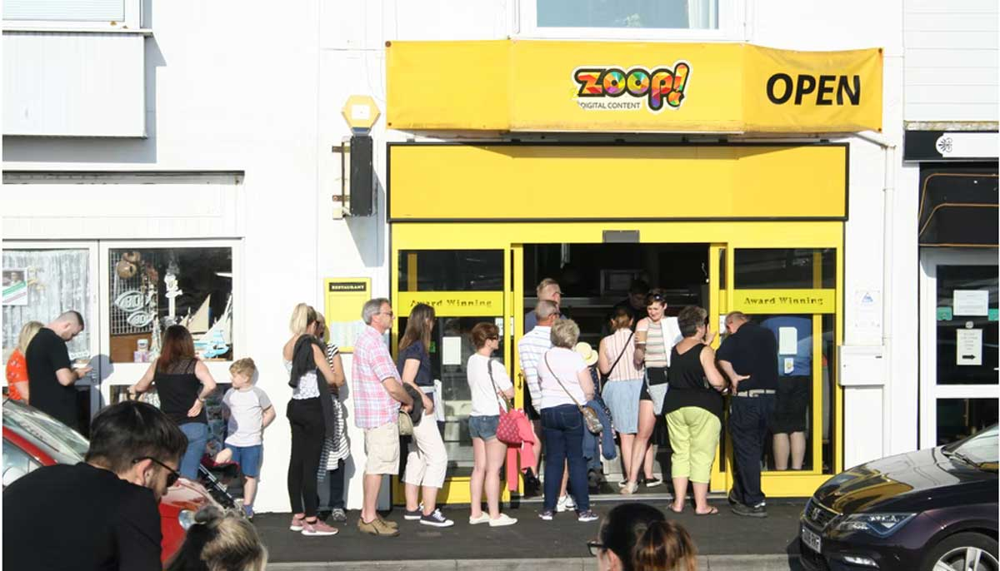

Posted By: Joaquim em Janeiro, 29, 2013.
Trazer novos clientes ajuda a recuperar o faturamento de clientes perdidos e também lhe ajuda a crescer, ainda mais em tempos de crise! O verão está chegando e com o calor as pessoas tendem a sair mais de casa, literalmente “desentocam”. Isso permite que você vá a eventos que acontecem a céu aberto e que contam com a presença de vários dos seus potenciais clientes, como feiras municipais/regionais etc.

1. Participe de eventos locais
Nem todo mundo gosta de ir a eventos locais, mas convenhamos, trata-se de um local onde grande parte da comunidade da região e potenciais clientes se concentram e você tem a chance de angariar novos clientes facilmente com, talvez, custo zero.
Por exemplo, em junho de 2014, um evento em Porto Alegre reuniu 2,7 mil pessoas no Parcão. O Comida de Rua, evento também de Porto Alegre, reuniu 15 mil pessoas. Porque não dar uma passada por lá, ou até mesmo tentar ser um dos chefs?
Trata-se de uma ótima maneira de conviver com apreciadores de comida, se você tem uma loja de temperos, carnes etc, ou um restaurante, porque não ir até o evento e conversar com seus potenciais clientes? Talvez alguns se interessem e peguem o seu cartão…
Sempre algo de bom você irá tirar desta experiência, principalmente a potencialidade de novos clientes fiéis.
2. Faça um evento na sua própria loja (in-house)
Faça um evento na sua loja e atraia novos potenciais clientes e clientes fiéis para darem uma olhada nos seus artigos a venda, além de fazer um bom networking você estará também trabalhando um pouco de branding, transformando a sua loja em referência na sua área de atuação.
Mas, a chave para um bom evento na sua loja é atrair o maior número de pessoas possível. Para isso, não basta apenas pendurar uma plaquinha na porta da loja anunciando ‘Coquetel gratuito na quinta-feira 18h’. Para garantir que seu evento vai ‘bombar’, veja algumas ideias:
Ofereça um brinde gratuito, como uma caneca ou camiseta com o logotipo da sua loja;
Faça parceria com outros negócios locais para que eles possam trazer os seus clientes até a sua loja (claro que você também deverá anunciar os eventos deles depois);
Ofereça petiscos e bebidas gratuitos;
Considere encontrar uma banda local para uma música ao-vivo e quem sabe um artista local para decorar a loja e talvez vender alguns quadros;
Crie um tema para seu evento, talvez um luau havaiano ou uma decoração ao estilo anos 80. Um toque criativo no tema do evento vai fazer as pessoas ficarem animadas para comparecerem, mas não esqueça de utilizar um tema que combine com o seu negócio e com o seu público alvo.
Tenha certeza de que você irá mostrar no evento quem é a sua loja e o que você vende. Se você tem um restaurante, saia um pouco da rotina e sirva comidas diferenciadas neste evento para encorajar as pessoas a voltarem no seu restaurante, pois o seu menu principal não é o mesmo do evento e vale a pena ser experimentado! Se você é uma loja de roupas, garanta que as suas roupas estejam bem a vista, mesmo com toda organização do evento e decoração na loja.
3. Compareça a feiras e bazares da região
Se você vende algo comestível, artigos bonitinhos ou visualmente apelativos, você deve se fazer presente nas feiras e bazares. Muitos comerciantes passam seus dias em feiras de artesanatos etc, com isso, eles conseguem a cada dia se colocar em frente a potenciais clientes, novos e já fiéis. Além de aumentar as vendas, a visibilidade do negócio aumenta bastante com um custo mais baixo.
Mesmo que você não venda produtos comestíveis ou lindas bolsas, feiras são um ótimo local para criar oportunidades e se conectar com a comunidade local, prospectar clientes, espalhar um pouco a sua marca e fazer um bom networking.
4. Promoções e descontos!
Sejamos sinceros, você quer saber como atrair clientes para dentro de uma loja, uma dica simples é, FAÇA PROMOÇÕES! Ofereça descontos especiais e faça promoções em ‘produtos âncora’. ‘Produtos âncora’ são produtos que você vende por um valor mais baixo para atrair potenciais clientes, que irão comprar este produto e já provavelmente irão comprar mais alguma coisa. Desta forma, novamente, você irá atrair novos clientes e venderá para clientes já fiéis de sua base.
Descontos especiais podem ser utilizados por qualquer tipo de negócio, não somente por quem vende produtos. Por exemplo, caso você tenha um restaurante, você pode ter um dos itens do seu menu por um preço bem baixo, talvez a cada noite da semana um item diferenciado por preço baixo, como uma entrada, por exemplo.
Como atrair clientes? Faça promoções!. Apenas lembre-se de certificar que você tem quantidade suficiente em estoque destes produtos. Não esqueça também de acompanhar bem o seu custo para não ter prejuízo com a promoção. Para isso, você pode utilizar um Software de Gestão como o QuantoSobra para fazer o controle de estoque etc.
5. Levante da cadeira e vá para a rua
Como atrair clientes para sua loja se você não se mexer? Impossível! Seus clientes estão na rua aproveitando uma bela caminhada e você deveria também. Para cada tipo de negócio, sair para a rua e tirar um bom proveito pode significar coisas diferentes, por isso, descubra como tirar proveito de uma caminhada para o seu negócio.
Talvez fazer uma visita para potenciais clientes e/ou para clientes novos possa lhe ajudar a atrair mais clientes para sua loja, talvez apenas uma ligação ou email faça o serviço. Softwares de Gestão Online, como o QuantoSobra, podem ser navegados do seu celular e isso permite que você vá para a rua e tenha o seu cadastro de clientes no bolso, utilize-se destas vantagens e faça visitas, antes de chegar no seu cliente, estude o perfil dele e veja o que ele gosta de comprar, para que no meio da conversa você possa informar ele que aquela peça que ele adora chegou na loja para venda.
Se você ainda não tem certeza de como pode tirar proveito de uma saída para a rua, veja algumas ideias de como atrair clientes desta forma:
Se você tem um restaurante, faça um pequeno evento na frente dele, oferecendo petiscos gratuitos. Quando o potencial cliente pegar um petisco, você pode lhe entregar um flyer e explicar um pouco sobre o que é servido no restaurante normalmente;
Você pode colocar placas diferentes com dizeres inteligentes e criativos que deixem as pessoas com vontade de entrar na sua loja;
Se você trabalha com uma linha fit ou esportiva, você pode, por exemplo, patrocinar uma aula de yoga no parque ou na praia para quem estiver por lá;
Uma loja de roupas ou de decoração, por exemplo, pode colocar alguns de seus artigos que estão a venda na rua para que ao passar, as pessoas fiquem com vontade de checarem a loja por dentro.
6. Faça programações para dias chuvosos
Como atrair clientes quando chove lá fora? A chuva é, na verdade, uma bela oportunidade. Quando chove as pessoas ficam sem ter o que fazer. Geralmente as programações são ao ar livre e com isso as pessoas ficam entediadas. Em épocas de férias, então, melhor ainda se você fizer algo, pois as pessoas estarão em casa, de bobeira, sem ter o que fazer.
Você pode oferecer promoções especiais em dias de chuva. Ofereça descontos etc e envie email, Facebook, WhatsApp para seus clientes informando da promoção relâmpago. A probabilidade de eles irem até a sua empresa é muito grande, tendo em vista a falta de opções do que fazer.
7. Faça parcerias com outros negócios
Uma ótima maneira de você ter sucesso na tarefa de como atrair clientes é tendo como seus parceiros outros negócios. Negócios locais são muito baseados na indicação, no boca-a-boca. Um colega empreendedor que possa indicar o seu negócio sempre é bem vindo. Forme alianças e comece a indicar parceiros e também obtenha indicação deles. Vocês tem clientes em comum, todavia, também tem clientes em potencial que já são cliente de alguém, se este alguém lhe indicar, tendo em vista a existência de uma relação de confiança entre o cliente e o seu fornecedor, uma indicação dele será levada muito a sério, o que é muito bom para o seu negócio.
Uma das melhores maneiras de fazer isto é dar amostras grátis de seus produtos para os parceiros, assim eles podem atestar a qualidade dos seus produtos, ou, ainda, convide-os para uma degustação ou um coquetel, ou até mesmo um daqueles seus eventos ‘in-house‘ e construa bons relacionamentos com eles, para que quando alguém perguntar, eles lembrem de indicar você.
A parceria pode ir além de apenas algumas indicações, talvez vocês possam fazer eventos juntos, dividir despesas etc. Além disso, vocês convidam seus clientes e desta forma irão aumentar o número de convidados, fazendo com que os clientes de um, conheçam também a empresa do outro.
Resumidamente, parcerias podem lhe ajudar a conhecer vários novos potenciais clientes. Como atrair clientes para sua empresa? Faça parcerias!
8. Não esqueça dos filhos e animais de estimação
Então, você já sabe como atrair clientes para seu negócio? A última dica que vamos dar é a seguinte: Seus clientes tem filhos e animais de estimação (pelo menos alguns deles). Se você não consegue atraí-los, talvez consiga trazê-los para sua loja com a desculpa de que eles irão passar um tempo especial com os seus filhos? Alugue alguns brinquedos e faça um dia em que todos os seus clientes poderão levar, gratuitamente, seus filhos para brincar nos brinquedos dentro de sua loja. Isso requer espaço, é claro.
Se você não tem espaço físico para alugar brinquedos para os filhos dos seus clientes/potenciais clientes, uma boa maneira de ter sucesso ao responder a pergunta de como atrair clientes é pensar nos seus pets. Um exemplo disto, algumas lojas que colocam um pote de água com uma placa dizendo que ‘Um pouco de água para o seu amiguinho’, bem na frente da porta da loja.
A probabilidade de que alguém pare ali com o cachorro ou gato para beber água é grande. Ao parar, a pessoa inevitavelmente irá olhar para dentro e ver quais produtos você tem em sua loja, quem sabe esta pessoa não se interesse e entre para ver?